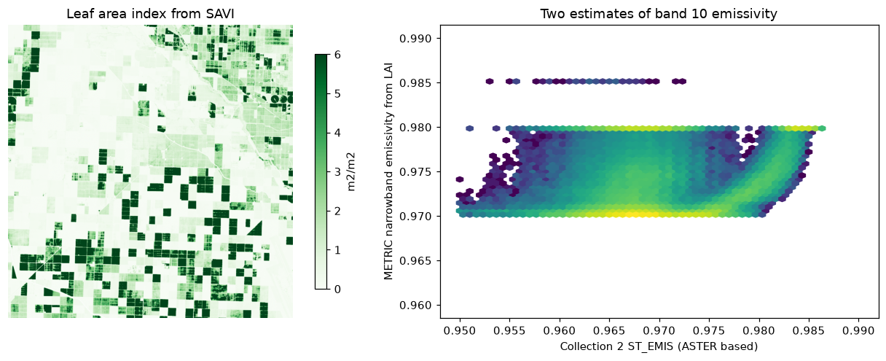
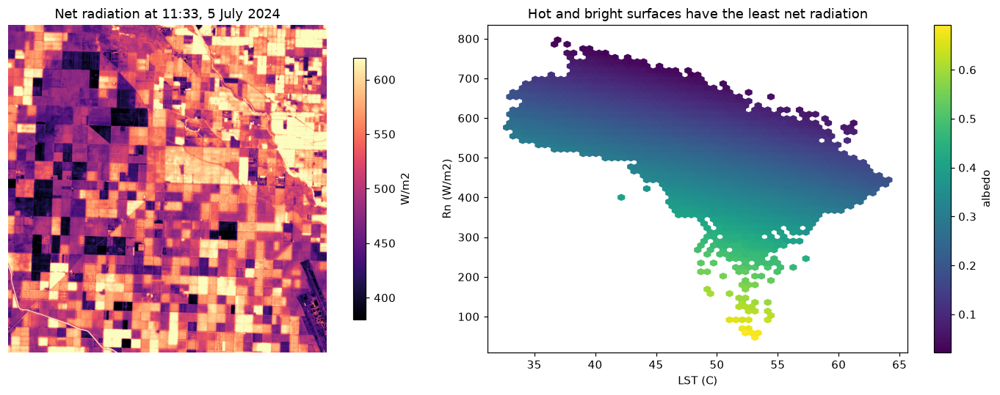

Net Radiation from Landsat: Albedo, Emissivity and Surface Temperature
Net radiation is the energy available at the surface, the left side of Rn = G + H + LE. Every watt of it that the model gets wrong ends up in the latent heat flux, because LE is the residual. Fortunately net radiation is the best constrained term: it follows from the sun’s position, the clearness of the sky, how much sunlight the surface reflects (albedo) and how much longwave it emits (emissivity and temperature). This notebook builds each component for the 5 July 2024 Landsat 8 scene: land surface temperature from the thermal radiance, broadband albedo from six reflective bands (checked against MODIS), clear-sky transmissivity and incoming shortwave, emissivity from LAI, and incoming and outgoing longwave, and then maps net radiation by crop.
Gsc cos(theta) dr tau_sw: solar constant, incidence angle, Earth-Sun distance, transmissivity
albedo
share of shortwave reflected
weighted sum of surface reflectance bands
RL_in
incoming longwave (sky)
eps_a sigma Ta^4, air emissivity from transmissivity
RL_out
outgoing longwave (surface)
eps0 sigma Ts^4 from LST
(1 - eps0) RL_in
sky longwave reflected by the surface
small, a few W m-2
Broadband albedo
Albedo is reflectance integrated over the whole solar spectrum (0.3 to 3 um) and all directions. Landsat measures six narrow bands at one view angle, so albedo is a weighted sum of them. The weights come from radiative transfer simulations: Liang (2001) for many sensors, adapted for OLI by Smith (2010), and Tasumi et al. (2008) for TM and ETM+, which METRIC uses. They differ because they assume different spectra of sunlight and surfaces; typical differences are 0.01 to 0.02.
Shortwave transmissivity
For clear skies, ASCE (2005) and METRIC compute the broadband transmissivity from pressure P, precipitable water W = 0.14 ea P + 2.1 and the sun angle:
tau_sw = 0.35 + 0.627 exp(-0.00146 P / (Kt cos theta) - 0.075 (W / cos theta)^0.4)
with Kt = 1 for clean air. On sloping ground cos theta is replaced by the cosine of the incidence angle on the slope, which depends on slope, aspect, latitude, declination and hour angle.
Land surface temperature from thermal radiance
The thermal sensor measures radiance at the top of the atmosphere, L_sensor. Part of it comes from the atmosphere itself (upwelled radiance Lu), part is sky radiance reflected by the surface ((1 - eps) Ld), and the surface emission is attenuated by the transmissivity tau:
L_sensor = tau eps B(Ts) + tau (1 - eps) Ld + Lu
Solving for the surface emission and inverting Planck’s law with the band constants K1 and K2 (from the scene’s MTL file) gives LST:
The Collection 2 Level-2 product delivers every term of this equation (ST_TRAD, ST_URAD, ST_DRAD, ST_ATRAN, ST_EMIS), computed from a reanalysis atmospheric profile with MODTRAN and ASTER emissivity, together with the resulting ST_B10.
Emissivity
Broadband emissivity eps0 (for longwave emission) and narrowband emissivity (for the thermal band) both rise from about 0.95 to 0.98 with leaf area. METRIC uses eps0 = 0.95 + 0.01 LAI for LAI up to 3 (Tasumi 2003) and 0.985 for water.
The Radiation Balance with GeoLattice
Function
Purpose
seb.albedo(sr, sensor=)
broadband albedo (landsat8, tasumi, sentinel2, modis weights)
Retrieve LST from Landsat thermal radiance with the atmospheric terms of Collection 2, and see what the atmospheric correction changes.
Compute broadband albedo with two sets of weights and check it against MODIS.
Compute clear-sky transmissivity and incoming shortwave, and compare with ERA5.
Estimate LAI and emissivity, and the longwave terms.
Map net radiation and explain its pattern across crops and fallow land.
Data
Dataset
Content
Landsat 8 C2 L2, 5 July 2024
reflectance, ST_B10, and the thermal radiance terms, cached by sd.load_scene
Scene MTL file
thermal constants K1, K2 of band 10
MODIS MCD43A4, day 187 of 2024
500 m nadir BRDF-adjusted reflectance, tile h08v05
ERA5 at the overpass
air temperature, humidity and measured shortwave
Contents
Setup
Land surface temperature from thermal radiance
Broadband albedo
Albedo against MODIS
Transmissivity and incoming shortwave
LAI and emissivity
Longwave radiation
Net radiation
Summary and exercises
Setup
Installation. This notebook needs installation option 5 (core, spatial analysis, spatial statistics, geostatistics and remote sensing): pip install "geolattice[remote-sensing]". See “Installation options” in the GeoLattice README.
Code
import warnings # warning controlwarnings.filterwarnings("ignore") # hide routine library warningsfrom pathlib import Path # file pathsimport matplotlib.pyplot as plt # figuresimport numpy as np # arraysimport pandas as pd # tablesimport rioxarray # noqa: F401 (registers the .rio accessor)import xarray as xr # labelled rastersimport geolattice # GeoLatticeimport geolattice.rsense.surface_energy_balance as seb # energy balance and ET modelsimport seb_data as sd # chapter helper: downloads, caches and loads the scenesplt.rcParams.update({"figure.dpi": 110}) # figure resolutionOUT = Path("outputs") # results written by this chapterOUT.mkdir(exist_ok=True) # create it if neededprint("GeoLattice", geolattice.__version__, "| data folder", sd.DATA.relative_to(sd.DATA.parents[3])) # versions and pathsimport requests # the MTL filefrom geolattice.rsense.optical import lst as lstmod # brightness temperature and single-channel LSTds = sd.load_scene() # Landsat 8, 5 July 2024m = ds.clear.astype(bool) & (ds.water ==0) # clear land pixelsa = ds.attrs # overpass weather and geometryext = [float(ds.x.min()), float(ds.x.max()), float(ds.y.min()), float(ds.y.max())] # map extentGROUPS = {"Tree crops": [75, 204, 76, 211, 212, 217], "Grapes": [69], "Annual crops": [54, 2, 1, 36, 208, 24, 21, 51],"Fallow": [61], "Grass and shrubs": [176, 152], "Developed": [121, 122, 123, 124]} # CDL codes per groupdef by_group(**layers): # mean of each layer per crop group df = xr.Dataset(layers).assign(cdl=ds.cdl).to_dataframe().dropna() # one row per pixel out = {g: df[df.cdl.isin(c)].drop(columns=["cdl", "spatial_ref"], errors="ignore").mean() for g, c in GROUPS.items()} # group meansreturn pd.DataFrame(out).T # one row per group
GeoLattice 0.3.49 | data folder GeoLattice/Data/08_remote_sensing/08_12_surface_energy_balance
Land surface temperature from thermal radiance
The thermal constants of band 10 come from the scene’s MTL file. With them and the atmospheric terms of Collection 2, the radiative transfer equation of the Overview gives LST.
Code
item = sd.landsat_item(sd.MAIN_SCENE) # STAC itemmtl = requests.get(item.assets["mtl.json"].href, timeout=60).json()["LANDSAT_METADATA_FILE"] # metadataK1 =float(mtl["LEVEL1_THERMAL_CONSTANTS"]["K1_CONSTANT_BAND_10"]) # W m-2 sr-1 um-1K2 =float(mtl["LEVEL1_THERMAL_CONSTANTS"]["K2_CONSTANT_BAND_10"]) # Kprint(f"band 10: K1 = {K1}, K2 = {K2}") # constantsL, tau, Lu, Ld, eps = ds.trad, ds.atran, ds.urad, ds.drad, ds.emis # radiance terms from Collection 2B = (L - Lu - tau * (1- eps) * Ld) / (tau * eps) # surface-leaving blackbody radiancelst_rt = (K2 / np.log(K1 / B +1)).where(m) # LST by radiative transfer, Kbt = (K2 / np.log(K1 / L +1)).where(m) # top-of-atmosphere brightness temperature, Klst_sc = lstmod.lst_single_channel(bt, lstmod.emissivity_ndvi(seb.ndvi(ds.red, ds.nir)), wavelength=lstmod.WAVELENGTH["landsat8_b10"]) # emissivity only, no atmospherest = ds.lst.where(m) # Collection 2 ST_B10print(f"atmosphere at the overpass: tau {float(tau.mean()):.3f}, Lu {float(Lu.mean()):.2f}, Ld {float(Ld.mean()):.2f} W m-2 sr-1 um-1") # atmospherepd.DataFrame({"median (C)": [float(v.median()) -273.15for v in (bt, lst_sc, lst_rt, st)], # medians"minus ST_B10, median (K)": [float((v - st).median()) for v in (bt, lst_sc, lst_rt, st)], # bias against the product"minus ST_B10, 95th pct of |diff| (K)": [float(np.abs(v - st).quantile(0.95)) for v in (bt, lst_sc, lst_rt, st)]}, # spread index=["brightness temperature", "emissivity correction only", "radiative transfer (this notebook)", "Collection 2 ST_B10"]).round(2) # table
band 10: K1 = 774.8853, K2 = 1321.0789
atmosphere at the overpass: tau 0.834, Lu 1.45, Ld 0.71 W m-2 sr-1 um-1
median (C)
minus ST_B10, median (K)
minus ST_B10, 95th pct of |diff| (K)
brightness temperature
44.65
-6.51
7.94
emissivity correction only
46.55
-4.77
5.71
radiative transfer (this notebook)
51.28
0.13
0.14
Collection 2 ST_B10
51.15
0.00
0.00
The radiative transfer result reproduces ST_B10 within 0.15 K (the rest is rounding of the stored integers and the USGS implementation). The raw brightness temperature is 6.5 K too cold. Correcting for emissivity alone recovers less than 2 K of that; the other 4.8 K is the atmosphere, which absorbs 17 % of the surface signal (tau 0.83) and adds its own, colder, emission. Errors of that size matter: in the hot anchor, 1 K of LST changes H by about 15 to 20 W m-2. The chapter uses ST_B10.
Broadband albedo
seb.albedo accepts a Dataset of reflectance bands named blue, green, red, nir, swir16, swir22 and applies a chosen set of weights.
Code
sr = ds[list(sd.REFLECTANCE)].where(m) # six reflectance bandsalb_liang = seb.albedo(sr, sensor="landsat8") # Liang (2001) weights for OLI (no green band)alb_tasumi = seb.albedo(sr, sensor="tasumi") # Tasumi et al. (2008), TM/ETM+ bands mapped to OLIprint("weights:", {k: seb.ALBEDO_WEIGHTS[k] for k in ("landsat8", "tasumi")}) # the two sets of weightsfig, ax = plt.subplots(1, 3, figsize=(16, 4.6)) # three panelsim = ax[0].imshow(alb_liang, extent=ext, cmap="gray", vmin=0.1, vmax=0.3); plt.colorbar(im, ax=ax[0], shrink=0.8) # albedo mapax[0].set_title("Broadband albedo (Liang, OLI)"); ax[0].axis("off") # titleax[1].hist(alb_liang.values.ravel(), bins=120, range=(0.05, 0.35), alpha=0.6, label="Liang (OLI)") # distributionax[1].hist(alb_tasumi.values.ravel(), bins=120, range=(0.05, 0.35), alpha=0.6, label="Tasumi (TM)") # distributionax[1].legend(); ax[1].set_xlabel("albedo"); ax[1].set_title("Two sets of weights") # labelsax[2].hexbin(alb_liang.values.ravel(), (alb_tasumi - alb_liang).values.ravel(), gridsize=60, bins="log", extent=(0.08, 0.33, -0.04, 0.04)) # differenceax[2].axhline(0, color="k", lw=0.6); ax[2].set_xlabel("Liang albedo"); ax[2].set_ylabel("Tasumi - Liang") # labelsax[2].set_title(f"median difference {float((alb_tasumi - alb_liang).median()):+.3f}") # titleplt.tight_layout(); plt.show() # drawby_group(albedo=alb_liang, ndvi=seb.ndvi(sr.red, sr.nir)).round(3) # albedo per crop group
Albedo ranges from about 0.15 to 0.30. Group means differ less than one might expect: orchards are darkest (0.18, with shade between the tree rows), fallow land is 0.20 (many fields are recently tilled, darker soil), and the annual crop group is brightest (0.24; it includes harvested wheat stubble and the bright canopies of tomatoes and cotton). The Tasumi weights give albedo 0.006 lower in the median and up to 0.03 lower for bright surfaces, up to about 30 W m-2 of absorbed shortwave at this sun angle.
Albedo against MODIS
MODIS MCD43A4 provides nadir BRDF-adjusted reflectance at 500 m, a daily product fitted from 16 days of observations. Liang’s MODIS weights turn it into broadband albedo, and the Landsat albedo averaged over each MODIS pixel gives a scale-matched comparison.
Code
from rasterio.enums import Resampling # resampling methodscat = sd._catalog() # Planetary Computerit =list(cat.search(collections=["modis-43A4-061"], bbox=sd.WESTSIDE["bbox"], datetime="2024-07-05").items())[0] # day 187 tilenames = {1: "red", 2: "nir", 3: "blue", 4: "green", 5: "swir12", 7: "swir22"} # MODIS band numberscoarse = alb_liang.rio.write_crs(ds.rio.crs).rio.reproject(ds.rio.crs, resolution=480, resampling=Resampling.average) # Landsat albedo averaged to 480 mmod = xr.Dataset({n: rioxarray.open_rasterio(it.assets[f"Nadir_Reflectance_Band{b}"].href).squeeze("band", drop=True) .rio.reproject_match(coarse, resampling=Resampling.bilinear) for b, n in names.items()}) # NBAR on that gridmod = mod.where(mod <32767) *1e-4# fill value and scale factoralb_modis = seb.albedo(mod, sensor="modis") # Liang (2001) MODIS weightspair = pd.DataFrame({"modis": alb_modis.values.ravel(), "landsat": coarse.values.ravel()}).dropna() # matched pixelspair = pair[(pair.landsat >0) & (pair.modis >0)] # valid pairsstats = seb.compare_to_tower(pair.landsat, pair.modis) # Landsat against MODISprint(f"{int(stats.n)} cells of 480 m: bias {stats.bias:+.3f}, RMSE {stats.rmse:.3f}, R2 {stats.r2:.2f}") # agreementfig, ax = plt.subplots(figsize=(5, 5)); ax.scatter(pair.modis, pair.landsat, s=8, alpha=0.6) # scatterax.plot([0.1, 0.3], [0.1, 0.3], "k--", lw=0.8); ax.set_xlabel("MODIS MCD43A4 albedo"); ax.set_ylabel("Landsat albedo, 480 m mean") # 1:1 lineax.set_title("Broadband albedo, 5 July 2024"); plt.tight_layout(); plt.show() # draw
The two sensors agree closely on the spatial pattern, with a small offset between them. Exact agreement is not expected: MCD43A4 is nadir reflectance at local solar noon from a 16 day fit, the Landsat image is one view at 11:33, and the two use different weights. The check rules out gross errors such as a missing scale offset or a wrong band order.
Transmissivity and incoming shortwave
Pressure comes from the DEM, vapour pressure from the ERA5 dew point at the overpass, and the sun angle from the metadata. On flat ground cos theta is the cosine of the solar zenith angle.
Code
pressure = seb.pressure_from_elevation(ds.dem) # kPacos_z =float(np.cos(np.radians(90- a["sun_elevation"]))) # flat groundtau_sw = seb.broadband_transmissivity(cos_z, pressure=pressure, ea=a["ea_kpa"]) # clear-sky transmissivityrs_in = seb.incoming_shortwave(cos_z, tau_sw, dr=a["dr"]) # W/m2slope, aspect = seb.slope_aspect(ds.dem) # terraincos_t = seb.cos_incidence(sd.WESTSIDE["lat"], pd.Timestamp(a["datetime"]), sd.WESTSIDE["lon"], slope, aspect) # on the slopesrs_slope = seb.incoming_shortwave(cos_t, tau_sw, dr=a["dr"]) # W/m2 with terrainprint(f"precipitable water {float(seb.precipitable_water(a['ea_kpa'], pressure.mean())):.1f} mm | tau_sw {float(tau_sw.mean()):.3f}") # atmosphereprint(f"Rs_in, clear-sky model: {float(rs_in.mean()):.0f} W/m2 (flat), {float(rs_slope.min()):.0f} to {float(rs_slope.max()):.0f} W/m2 with terrain") # modelprint(f"pixels the terrain correction changes by more than 10 W/m2: {float((np.abs(rs_slope - rs_in) >10).mean()):.1%}") # how many matterprint(f"Rs_in, ERA5 at the overpass: {a['rs_wm2']:.0f} W/m2") # reanalysis
precipitable water 11.9 mm | tau_sw 0.784
Rs_in, clear-sky model: 950 W/m2 (flat), 788 to 1024 W/m2 with terrain
pixels the terrain correction changes by more than 10 W/m2: 1.1%
Rs_in, ERA5 at the overpass: 854 W/m2
On this valley floor the terrain correction changes only 1.1 % of pixels by more than 10 W m-2. Its extremes (about 790 to 1,020 W m-2) come from canal banks, road embankments and noise in the 30 m DEM, a few pixels with slopes of a few degrees; the chapter therefore uses flat-ground radiation for the Westside scenes, while the hill-slope correction matters in mountain valleys. The clear-sky model gives about 950 W m-2, roughly 10 % more than ERA5’s value interpolated to the overpass. ERA5 averages over each hour and over a 25 km cell that includes hazier foothill air, so a gap of this size on a cloudless day is typical; the METRIC clear-sky formula is used for the instantaneous balance because it is computed for the exact time and place.
LAI and emissivity
METRIC estimates LAI from SAVI with an empirical curve from southern Idaho crops (Allen et al. 2002), using the soil adjustment L = 0.1 from that calibration, and emissivity from LAI.
Code
savi = seb.savi(sr.red, sr.nir, L=0.1) # SAVI with L = 0.1 (METRIC)lai = seb.leaf_area_index(savi) # m2/m2, capped at 6e0 = seb.surface_emissivity(lai, seb.ndvi(sr.red, sr.nir)) # broadband, for longwavee_nb = seb.surface_emissivity(lai, seb.ndvi(sr.red, sr.nir), kind="narrowband") # band 10fig, ax = plt.subplots(1, 2, figsize=(12, 4.6)) # two panelsim = ax[0].imshow(lai, extent=ext, cmap="Greens", vmin=0, vmax=6); plt.colorbar(im, ax=ax[0], shrink=0.8, label="m2/m2") # LAI mapax[0].set_title("Leaf area index from SAVI"); ax[0].axis("off") # titleax[1].hexbin(ds.emis.where(m).values.ravel(), e_nb.values.ravel(), gridsize=60, bins="log", extent=(0.95, 0.99, 0.96, 0.99)) # band emissivityax[1].set_xlabel("Collection 2 ST_EMIS (ASTER based)"); ax[1].set_ylabel("METRIC narrowband emissivity from LAI") # labelsax[1].set_title("Two estimates of band 10 emissivity"); plt.tight_layout(); plt.show() # drawby_group(lai=lai, eps0=e0, st_emis=ds.emis.where(m)).round(3) # per crop group

lai
eps0
st_emis
Tree crops
1.201
0.961
0.971
Grapes
2.344
0.968
0.975
Annual crops
2.413
0.965
0.971
Fallow
0.036
0.950
0.969
Grass and shrubs
0.218
0.952
0.966
Developed
0.237
0.952
0.967
LAI tracks the crop pattern: dense fields reach the cap of 6, the group means are about 2.4 for annual crops and grapes and 1.2 for orchards (young plantings and bare rows between the trees), and fallow land is near 0. The two emissivity estimates agree on the range but not pixel by pixel: ST_EMIS adjusts a multi-year ASTER emissivity with the NDVI of the day, while the METRIC curve uses LAI alone, and it is lower over bare soil (0.95 against about 0.97). A difference of 0.01 in emissivity changes outgoing longwave by about 6 W m-2 at 330 K.
Longwave radiation
Outgoing longwave follows from LST and broadband emissivity. Incoming longwave needs the air temperature near the surface; METRIC takes the LST of the cold anchor as a surrogate (a well watered crop is close to air temperature) and the air emissivity from transmissivity, eps_a = 0.85 (-ln tau_sw)^0.09. The Brutsaert (1975) formula with ERA5 air temperature and humidity is an independent estimate.
Code
anchors = seb.select_anchors(seb.ndvi(sr.red, sr.nir), st, albedo_=alb_liang, mask=m) # cold and hot pixels (notebook 05)t_cold = anchors["cold"]["lst"] # Ktau_c =float(tau_sw.values[anchors["cold"]["iy"], anchors["cold"]["ix"]]) # transmissivity at the cold pixelrl_in = seb.incoming_longwave(t_cold, seb.air_emissivity(tau_sw=tau_c)) # METRIC, W/m2rl_in_b = seb.incoming_longwave(a["t_air_c"] +273.15, seb.air_emissivity(ea=a["ea_kpa"], t_air_k=a["t_air_c"] +273.15)) # Brutsaert with ERA5rl_out = seb.outgoing_longwave(st, e0) # W/m2print(f"cold anchor LST {t_cold -273.15:.1f} C, ERA5 air {a['t_air_c']:.1f} C") # the two air temperature surrogatesprint(f"RL_in: METRIC {float(rl_in):.0f} W/m2, Brutsaert with ERA5 {float(rl_in_b):.0f} W/m2") # incoming longwaveprint(f"RL_out: {float(rl_out.quantile(0.02)):.0f} to {float(rl_out.quantile(0.98)):.0f} W/m2 (2nd to 98th percentile)") # outgoing longwave
cold anchor LST 35.2 C, ERA5 air 39.8 C
RL_in: METRIC 384 W/m2, Brutsaert with ERA5 392 W/m2
RL_out: 510 to 665 W/m2 (2nd to 98th percentile)
The two estimates of incoming longwave are within 8 W m-2 (384 and 392): the cold anchor (a well watered almond orchard at 35.2 C) is 4.6 K cooler than the ERA5 air, and the transmissivity-based air emissivity makes up most of that difference. Outgoing longwave varies across the scene by about 150 W m-2, almost all of it from LST: hot fallow fields lose far more energy as longwave than cool crops.
Net radiation
Code
rn = seb.net_radiation(rs_in, alb_liang, rl_in, rl_out, e0) # W/m2check = sd.energy_inputs(ds)["rn"] # the same chain in the chapter helperprint(f"Rn {float(rn.quantile(0.02)):.0f} to {float(rn.quantile(0.98)):.0f} W/m2 (median {float(rn.median()):.0f}); "f"largest difference from sd.energy_inputs: {float(np.nanmax(np.abs(rn - check))):.2e}") # range and checkparts = by_group(Rs_in=rs_in +0* st, reflected=-alb_liang * rs_in, RL_in=rl_in +0* st, RL_out=-rl_out, RL_reflected=-(1- e0) * rl_in, Rn=rn) # components per groupdisplay(parts.round(0)) # W/m2fig, ax = plt.subplots(1, 2, figsize=(14, 5)) # map and scatterim = ax[0].imshow(rn, extent=ext, cmap="magma", vmin=380, vmax=620); plt.colorbar(im, ax=ax[0], shrink=0.8, label="W/m2") # Rn mapax[0].set_title("Net radiation at 11:33, 5 July 2024"); ax[0].axis("off") # titleh = ax[1].hexbin((st -273.15).values.ravel(), rn.values.ravel(), C=alb_liang.values.ravel(), gridsize=60, cmap="viridis") # Rn vs LST, coloured by albedoplt.colorbar(h, ax=ax[1], label="albedo"); ax[1].set_xlabel("LST (C)"); ax[1].set_ylabel("Rn (W/m2)") # labelsax[1].set_title("Hot and bright surfaces have the least net radiation"); plt.tight_layout(); plt.show() # draw
Rn 392 to 645 W/m2 (median 524); largest difference from sd.energy_inputs: 0.00e+00
Rs_in
reflected
RL_in
RL_out
RL_reflected
Rn
Tree crops
950.0
-175.0
384.0
-578.0
-15.0
566.0
Grapes
950.0
-211.0
384.0
-557.0
-12.0
554.0
Annual crops
950.0
-226.0
384.0
-575.0
-14.0
519.0
Fallow
950.0
-186.0
384.0
-645.0
-19.0
484.0
Grass and shrubs
950.0
-206.0
384.0
-632.0
-18.0
478.0
Developed
950.0
-201.0
384.0
-613.0
-18.0
501.0

Net radiation is highest over orchards and vineyards (566 and 554 W m-2) and lowest over fallow land and rangeland (484 and 478 W m-2). The component table shows why: the groups reflect similar amounts of sunlight, but hot fallow land emits about 70 W m-2 more longwave than the cool orchards. The difference of about 80 W m-2 is a substantial share of what is available for ET. Within the crops, the spread of net radiation is small compared with the spread of H and LE that the next notebooks find, which is why the accuracy of the models depends mostly on H.
Summary and exercises
Radiative transfer with the Collection 2 atmospheric terms reproduces ST_B10 within 0.15 K; the uncorrected brightness temperature is 6.5 K too cold.
Broadband albedo from OLI bands with Liang’s weights ranges from about 0.15 to 0.30, agrees with MODIS MCD43A4 at 480 m (bias -0.004, RMSE 0.018, R2 0.76), and is 0.006 higher than the Tasumi weights in the median.
Clear-sky incoming shortwave at the overpass was about 950 W m-2; ERA5’s hourly value was about 10 % lower.
METRIC’s incoming longwave (cold anchor LST and transmissivity) agrees with Brutsaert’s formula and ERA5.
Net radiation follows LST more than albedo here: orchards and vineyards had about 80 W m-2 more net radiation than fallow land, mostly because they emit less longwave.
Exercises
Recompute LST by radiative transfer with the METRIC narrowband emissivity instead of ST_EMIS. How large are the differences over fallow land?
Replace the Liang albedo with the Tasumi albedo in Rn. What is the mean change in W m-2, and in daily ET if it all went to LE?
Compute Rn for the 8 April scene. How does it compare with July, and which term changes most?
Use seb.cos_incidence to compute incoming shortwave for a 15 degree south-facing slope and a 15 degree north-facing slope at this overpass time.